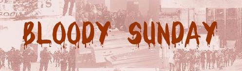
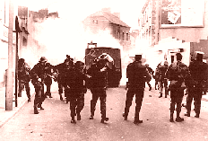

(Start date of the current 'Troubles')
A civil rights march in Derry, which had been organised by members of the Derry Housing Action Committee (DHAC) and supported by the Northern Ireland Civil Rights Association (NICRA), was stopped by the Royal Ulster Constabulary (RUC) before it had properly begun. The marchers had proposed to walk from Duke Street in the Waterside area of Derry to the Diamond in the centre of the City. Present at the march were three British Labour Party Members of Parliament (MP), Gerry Fitt, then Republican Labour MP, several Stormont MPs, and members of the media including a television crew from RTE. Estimates of the number of people taking part in the march differ. Eamonn McCann (one of the organisers of the march) estimated that about 400 people lined up on the street with a further 200 watching from the pavements. The RUC broke-up the march by baton-charging the crowd and leaving many people injured including a number of MPs. The incidents were filmed and there was world-wide television coverage. The incidents in Derry had a profound effect on many people around the world but particularly on the Catholic population of Northern Ireland. Immediately after the march there were two days of serious rioting in Derry between the Catholic residents of the city and the RUC.
Approximately 40 members of People's Democracy (PD) began a four-day march from Belfast across Northern Ireland to Derry. The Northern Ireland Civil Rights Association (NICRA) and some nationalists in Derry had advised against the march. The march was modelled on Martin Luther King's Selma to Montgomery march. The first day involved a walk from Belfast to Antrim. [Over the next four days the number of people on the march grew to a few hundred. The march was confronted and attacked by Loyalist crowds on a number of occasions the most serious attack occurring on 4 January 1969.]
The fourth, and final, day of the People's Democracy (PD) march took the marchers from Claudy to Derry. Seven miles from its destination, the People's Democracy (PD) march was ambushed and attacked by a loyalist mob at Burntollet Bridge. The ambush had been planned in advance and around 200 loyalists, including off-duty members of the 'B-Specials', used sticks, iron bars, bottles and stones to attack the marchers, 13 of whom received hospital treatment. The marchers believed that the 80 Royal Ulster Constabulary (RUC) officers, who accompanied the march, did little to protect them from the Loyalist crowd. As the march entered Derry it was again attached at Irish Street, a mainly Protestant area of the city. Finally the Royal Ulster Constabulary (RUC) broke up the rally that was held in the centre of the city as the march arrived. This action, and the subsequent entry of the RUC into the Bogside area of the city, led to serious rioting.
As the Apprentice Boys parade passed close to the Bogside area serious rioting erupted. The Royal Ulster Constabulary (RUC), using armoured cars and water cannons, entered the Bogside, in an attempt to end the rioting. The RUC were closely followed by a loyalist crowd. The residents of the Bogside forced the police and the loyalists back out of the area. The RUC used CS gas to again enter the Bogside area. [What was to become known as the 'Battle of the Bogside' lasted for two days.]
Serious rioting spread across Northern Ireland from Derry to other Catholic areas stretching the Royal Ulster Constabulary (RUC). The rioting deteriorated into sectarian conflict between Catholics and Protestants and many people, the majority being Catholics, were forced from their homes.
Jack Lynch, then Taoiseach (Irish Prime Minister), made a television address in which he announced that 'field hospitals' would be set up in border areas. He went on to say that: "... the present situation is the inevitable outcome of the policies pursued for decades by successive Stormont governments. It is clear also that the Irish government can no longer stand by and see innocent people injured and perhaps worse."
After two days of continuous battle, and with the Royal Ulster Constabulary (RUC) exhausted, the Stormont government asked the British government for permission to allow British troops to be deployed on the streets of Northern Ireland. Late in the afternoon troops entered the centre of Derry. [At this stage British Troops did not enter the area of the Bogside and the Creggan. There was a tacit understanding between the British Army and the Derry Citizens Defence Association (DCDA) that if the RUC and the army remained outside these areas there would be an end to the rioting.This effectively saw the setting up of the 'no-go areas' where the normal rule of law did not operate.] John Gallagher, a Catholic civilian,unarmed, was shot dead by the Ulster Special Constabulary ('B-Specials') during street disturbances on the Cathedral Road in Armagh. [John Gallagher was recorded, by the Royal Ulster Constabulary (RUC), as the first 'official' victim of 'the Troubles'.] In Belfast vicious sectarian riots erupted and continued the following day. Many people were killed and injured, and many families were forced to move from their homes. British troops took up duties on the streets of west Belfast.
During rioting in Derry, two Catholic men, Seamus Cusack (27) and Desmond Beattie (19), were shot dead by the British Army in disputed circumstances. The Army claimed the men were armed but local people maintained that they did not have any weapons at any time. The rioting intensified following their deaths. [The Social Democratic and Labour Party (SDLP) withdrew from Stormont on 16 July 1971 because no inquiry was announced into the killings.]
In a series of raids across Northern Ireland, 342 people were arrested and taken to makeshift camps. There was an immediate upsurge of violence and 17 people were killed during the next 48 hours. Of these 10 were Catholic civilians who were shot dead by the British Army. Hugh Mullan (38) was the first Catholic priest to be killed in the conflict when he was shot dead by the British Army as he was giving the last rites to a wounded man. Winston Donnell (22) became the first Ulster Defence Regiment (UDR) solider to die in 'the Troubles' when he was shot by the Irish Republican Army (IRA) near Clady, County Tyrone. [There were more arrests in the following days and months. Internment was to continue until 5 December 1975. During that time 1,981 people were detained; 1,874 were Catholic / Republican, while 107 were Protestant / Loyalist. Internment had been proposed by Unionist politicians as the solution to the security situation in Northern Ireland but was to lead to a very high level of violence over the next few years and to increased support for the IRA.]
Beginning of an Anti-Internment week throughout County Derry organised by the Social Demcoratic and Labour Party (SDLP). All Catholic schools closed to enable staff and students to give their support. Early in the evening as crowds were dispersing towards Free Derry, rioting began. During a lull in the rioting a 14 year old girl was shot in the back of the head by the British Army and killed. Rioting escalated and continued through the night.
At 5.00am in the morning, the British Army again moved in large numbers into the Catholic areas of Derry; Bogside, Creggan and Shantallow, breaking their way into homes, and taking a further 17 men away for internment. The following day, Derry was at a standstill with factory workers going on strike, and schools and shops etc., closing. Rioting began again on the streets of Derry.
General Ford, then Commander of Land Forces in Northern Ireland, is believed to have issued orders to Andrew MacLellan, commander 8 Infantry Brigade (who was in overall command of the troops on 'Bloody Sunday'), that he should try, "so far as possible, to recreate the state of law in the Creggan and Bogside as and when he could"
An anti-internment march was held at Magilligan strand, County Derry, with several thousand people taking part. As the march neared the internment camp it was stopped by members of the Green Jackets and the Parachute Regiment of the British Army, who used barbed wire to close off the beach. When it appeared that the marchers were going to go around the wire, the army then fired rubber bullets and CS gas at close range into the crowd. A number of witnesses claimed that the paratroopers (who had been bused from Belfast to police the march) severely beat a number of protesters and had to be physically restrained by their own officers. John Hume accused the soldiers of "beating, brutalising and terrorising the demonstrators".
Frank Lagan, then Chief Superintendent of the Royal Ulster Constabulary (RUC) notified Andrew MacLellan, then Commander 8 Infantry Brigade, of his contact with the Civil Rights Association, and informed him of their intention to hold a non-violent demonstration protesting against Internment on 30 January 9172. He also asked that the march be allowed to take place without military intervention. MacLellan agreed to recommend this approach to General Ford, then Commander of Land Forces in Northern Ireland. However Ford had placed Derek Wilford, Commander of 1st Battalion Parachute Regiment, in charge of the proposed arrest operation. [The broad decision to carry out arrests were probably discussed by the Northern Ireland Committee of the British Cabinet. Edward Heath, then British Prime Minister, confirmed on 19 April 1972 that the plan was known to British government Ministers.]
The Northern Ireland Civil Rights Association (NICRA), in an effort to avoid a repeat of the violence at Milligan Strand on 22 January 1972, placed "special emphasis on the necessity for a peaceful incident-free day" at the next NICRA march on 30 January 1972 28 January 1972. [According to a Channel 4 documentary. Secret History: Bloody Sunday, broadcast on 22 January 1992, Ivan Cooper, then a Member of Parliament at Stormont, who was involved in the organisation of the march, had obtained assurances from the Irish Republican Army (IRA) that its members would withdraw from the area during the march.]

'Bloody Sunday' refers to the shooting dead by the British Army of 13 civilans (and the wounding of another 14 people, one of whom later died) during a Civil Rights march in Derry. The Northern Ireland Civil Rights Association (NICRA) march against internment was meant to start at 2.00pm from the Creggan. The march left late (2.50pm approximately) from Central Drive in the Creggan Estate and took an indirect route towards the Bogside area of the city. People joined the march along its entire route. At approximately 3.25pm the march passed the 'Bogside Inn' and turned up Westland Street before going down William Street. Estimates of the number of marchers at this point vary. Some observers put the number as high as 20,000 whereas the Widgery Report estimated the number at between 3,000 and 5,000. Around 3.45pm most of the marchers followed the organisers instructions and turned right into Rossville Street to hold a meeting at 'Free Derry Corner'. However a section of the crowd continued along William Street to the British Army barricade. A riot developed. (Confrontations between the Catholic youth of Derry and the British Army had become a common feature of life in the city and many observers reported that the rioting was not particularly intense.)

At approximately 3.55pm, away from the riot and also out of sight of the meeting, soldiers (believed to be a machine-gun platoon of Paratroopers) in a derelict building in William Street opened fire (shooting 5 rounds) and injured Damien Donaghy (15) and John Johnston (59). Both were treated for injuries and were taken to hospital (Johnston died on 16 June 1972). [The most recent information (see, for example, Pringle, P. and Jacobson, P.; 2000) suggests that an Official IRA member then fired a single shot in response at the soldiers in the derelict building. This incident happened prior to the main shooting and also out of sight of Rossville Street.]
Also around this time (about 3.55pm) as the riot in William Street was breaking up, Paratroopers requested permission to begin an arrest operation. By about 4.05pm most people had moved to 'Free Derry Corner' to attend the meeting.
At 4.07pm (approximately) An order was given for a 'sub unit' (Support Company) of the 1st Battalion Parachute Regiment to move into William Street to begin an arrest operation directed at any remaining rioters. The order authorising the arrest operation specifically stated that the soldiers were "not to conduct running battle down Rossville Street" (Official Brigade Log). The soldiers of Support Company were under the command of Ted Loden, then a Major in the Parachute Regiment (and were the only soldiers to fire at the crowd from street level).
At approximately 4.10pm soldiers of the Support Company of the 1st Battalion Parachute Regiment began to open fire on people in the area of Rossville Street Flats. By about 4.40pm the shooting ended with 13 people dead and a further 14 injured from gunshots. The shooting took place in four main places: the car park (courtyard) of Rossville Flats; the forecourt of Rossville Flats (between the Flats and Joseph Place); at the rubble and wire barricade on Rossville Street (between Rossville Flats and Glenfada Park); and in the area around Glenfada Park (between Glenfada Park and Abbey Park). According to British Army evidence 21 soldiers fired their weapons on 'Bloody Sunday' and shot 108 rounds in total. [Most of the basic facts are agreed, however what remains in dispute is whether or not the soldiers came under fire as they entered the area of Rossville Flats. The soldiers claimed to have come under sustained attack by gunfire and nail-bomb. None of the eyewitness accounts saw any gun or bomb being used by those who had been shot dead or wounded. No soldiers were injured in the operation, no guns or bombs were recovered at the scene of the killing.]